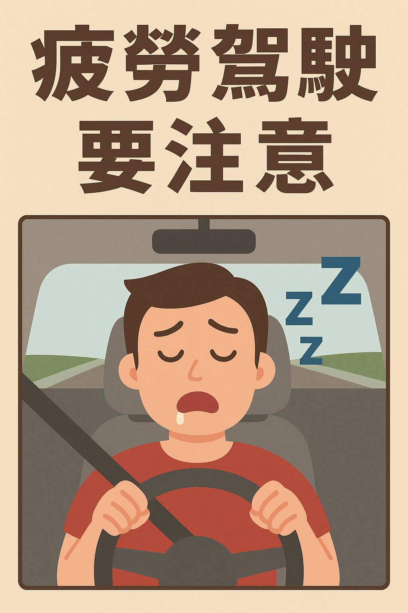

疲勞駕駛偵測系統

🧠 專案動機
根據交通部2022年統計，全台每年超過400起交通事故與疲勞駕駛有關。夜間長途駕駛與連續駕駛未休息，是最常見的危險因素之一。
例如，2021年國道1號清晨曾發生一起死亡事故，駕駛疑似打瞌睡超過3秒，導致偏離主線撞上護欄。這類事故雖短暫卻致命，成因往往是「無自覺疲勞」，導致閉眼過久與反應遲緩。
🎯 想解決的問題
- 駕駛是否長時間閉眼（異常眨眼）？
- 是否可即時提醒駕駛避免疲勞？
- 可否直接在網頁前端完成偵測，無需安裝？
🔍 功能介紹
- ✅ 開啟瀏覽器即可啟動鏡頭
- ✅ 利用 MediaPipe FaceMesh 模組分析眼部位置
- ✅ 當雙眼閉合超過 1 秒 即跳出疲勞提示警告，並播放聲音
- ✅ 無需安裝，無後端伺服器，純前端即可運行